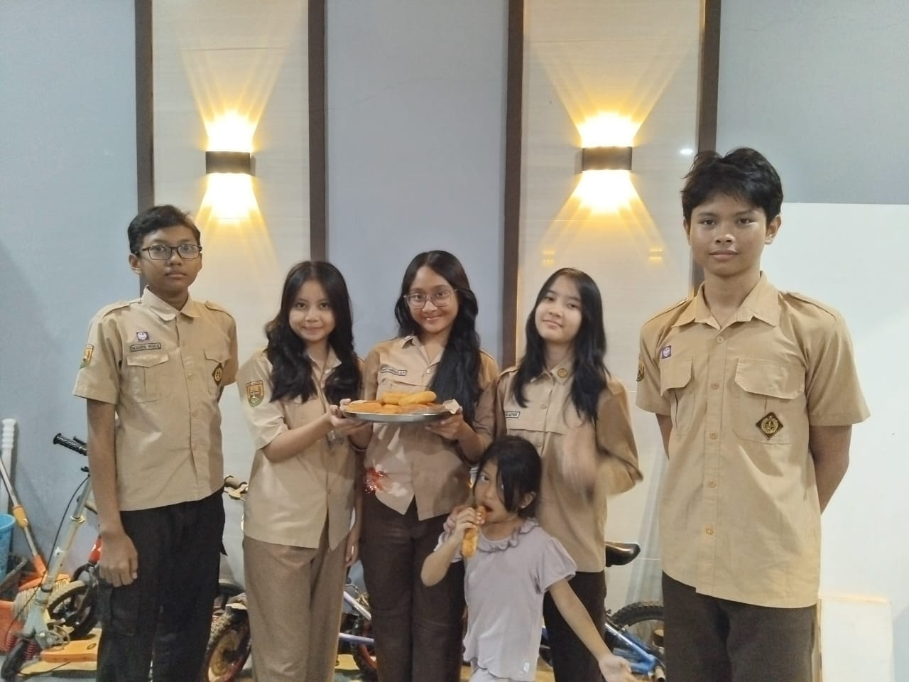
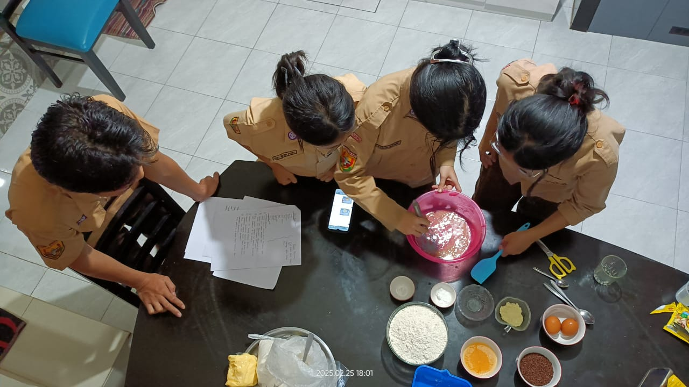
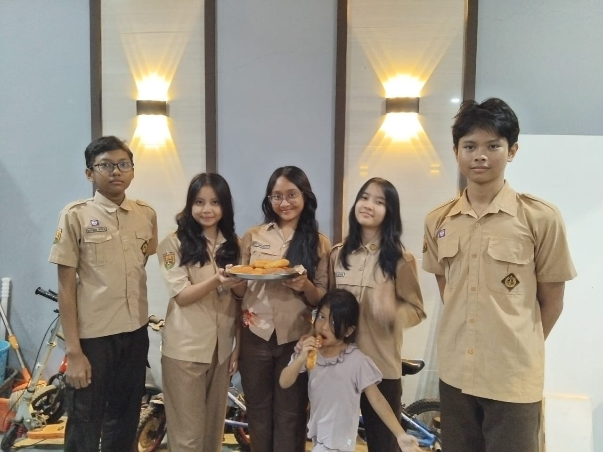
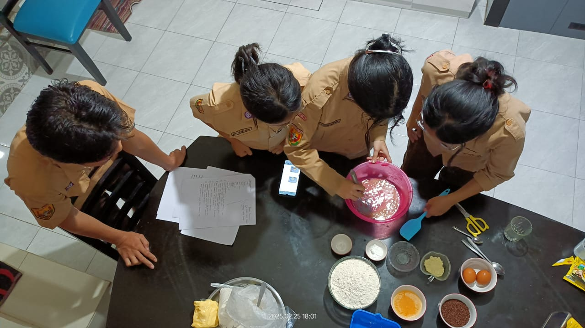

Pernahkah kamu berpikir bagaimana yogurt bisa difermentasi, bagaimana tanaman bisa tumbuh lebih tahan
hama, atau bagaimana vaksin bekerja dalam tubuh kita? Semua itu adalah hasil dari bioteknologi! Ilmu
ini telah berkembang pesat dan memiliki peran besar dalam berbagai aspek kehidupan, mulai dari
kesehatan, pertanian, hingga lingkungan.
Penjelasan Bioteknologi
Bioteknologi adalah cabang ilmu yang memanfaatkan
makhluk hidup, seperti bakteri, jamur, dan sel hewan atau tumbuhan, serta proses biologis untuk
menghasilkan produk dan layanan yang bermanfaat bagi manusia. Teknologi ini menggabungkan berbagai
disiplin ilmu, termasuk biologi, kimia, dan teknik genetika, untuk menciptakan inovasi yang dapat
meningkatkan kualitas hidup.

Kategori Bioteknologi
Konvensional :
Cabang bioteknologi yang sudah digunakan sejak lama dengan memanfaatkan mikroorganisme secara alami
dalam proses biologis tanpa rekayasa genetika. Teknik ini biasanya diterapkan dalam bidang pangan,
pertanian, dan kesehatan, menggunakan fermentasi atau seleksi alami untuk menghasilkan produk yang
bermanfaat. Teknik ini juga mudah diaplikasikan dan lebih murah dibandingkan dengan bioteknologi modern,
sehingga sering digunakan oleh masyarakat.
Modern :
Bioteknologi Modern adalah cabang bioteknologi yang menggunakan teknik rekayasa genetika, manipulasi
DNA, atau teknologi canggih lainnya untuk menghasilkan organisme atau produk dengan sifat yang lebih
unggul. Bioteknologi ini berkembang pesat seiring dengan kemajuan ilmu genetika, mikrobiologi, dan
biokimia, serta banyak diterapkan dalam bidang kesehatan, pertanian, dan industri. Teknik ini tergolong
mahal dan rumit, sehingga hanya dapat diakses oleh kalangan tertentu.

Sejarah
Bioteknologi bukanlah ilmu baru, praktiknya telah digunakan sejak ribuan tahun lalu. Sejak zaman kuno,
manusia telah memanfaatkan mikroorganisme dalam proses fermentasi untuk membuat makanan dan minuman seperti
roti, keju, dan bir. Namun, perkembangan ilmu pengetahuan membawa bioteknologi ke tingkat yang lebih maju.
Pada abad ke-19, Louis Pasteur menemukan bahwa fermentasi disebabkan oleh aktivitas mikroorganisme, yang
membuka jalan bagi pengembangan industri pangan dan obat-obatan. Sementara itu, Gregor Mendel, melalui
eksperimennya pada tanaman kacang, meletakkan dasar bagi ilmu genetika yang menjadi pilar utama dalam
bioteknologi modern.
Bioteknologi konvensional telah digunakan sejak lama dalam berbagai aspek kehidupan manusia, terutama dalam bidang pangan.
Proses ini memanfaatkan mikroorganisme alami untuk mengubah bahan mentah menjadi produk yang lebih bergizi, tahan lama, dan
memiliki cita rasa khas. Berikut adalah beberapa contoh penerapan bioteknologi konvensional dalam pangan:
Bioteknologi modern berkembang pesat seiring kemajuan ilmu pengetahuan dan teknologi. Dengan memanfaatkan teknik rekayasa
genetika, kultur jaringan, serta bioproses yang lebih canggih, bioteknologi modern telah memberikan dampak besar dalam
berbagai bidang, terutama dalam sektor pangan, kesehatan, dan lingkungan. Berikut adalah beberapa penerapan bioteknologi
modern:
Membuat donat
Pembuatan donat merupakan salah satu contoh penerapan bioteknologi
konvensional dalam pangan. Dalam proses ini, ragi berperan penting
dalam mengembangkan adonan sehingga menghasilkan tekstur yang lembut.
Yukk kita buat donat sendiri dengan menggunakan teknik fermentasi sederhana,
untuk mengetahui secara langsung bagaimana mikroorganisme bekerja dalam proses
pengolahan makanan.
| Tahapan |
Alat / Bahan |
Keterangan |
| Persiapan |
Bahan |
Ragi instan |
1 sdt |
| Tepung |
30 sdm |
| Gula pasir |
1-2 sdm |
| Telur |
1 butir |
| Margarin |
2 sdm |
| Peralatan |
Mangkuk, sendok, wisk, dan plastik warp |
Menyiapkan alat yang diperlukan |
| Pembuatan |
Membuat adonan |
|
Campurkan ragi, gula pasir, dan air hangat. Aduk rata dan
diamkan selama 10 menit hingga berbusa.
|
Proses ini untuk memastikan ragi aktif |
|
Campurkan tepung terigu, susu bubuk, dan gula pasir. Aduk rata.
|
|
Masukkan kuning telur dan larutan ragi. Uleni hingga setengah kalis.
|
|
Tambahkan mentega putih dan garam. Uleni terus hingga kalis elastis.
|
| Bulatkan adonan, letakkan dalam wadah proofing yang sudah diolesi minyak. Tutup dengan kain bersih dan diamkan selama 30-60 menit hingga mengembang dua kali lipat. |
Proses proofing untuk mengembangkan adonan |
| bagi menjadi bulatan kecil (sekitar 40 gram). |
| Bentuk donat menggunakan cetakan atau manual. Letakkan di atas loyang yang sudah ditaburi tepung. Diamkan selama 15 menit hingga mengembang. |
Proses proofing kedua untuk mengembangkan donat |
| Penggorengan |
Menggoreng Adonan |
| Panaskan minyak goreng dengan api sedang. |
| Goreng donat hingga kuning keemasan. Angkat dan tiriskan. |
| Pemberian Topping |
Gula halus, cokelat leleh, meses, atau topping sesuai selera |
Taburi atau celupkan donat dengan topping sesuai selera |
Nahhhh, jadi itu adalah salah satu pengaplikasian mikroorganisme dalam hal pangan.
Dengan memahami proses fermentasi, kita dapat membuat berbagai produk pangan yang
lezat dan bergizi. Selamat mencoba membuat donat sendiri di rumah!


 


